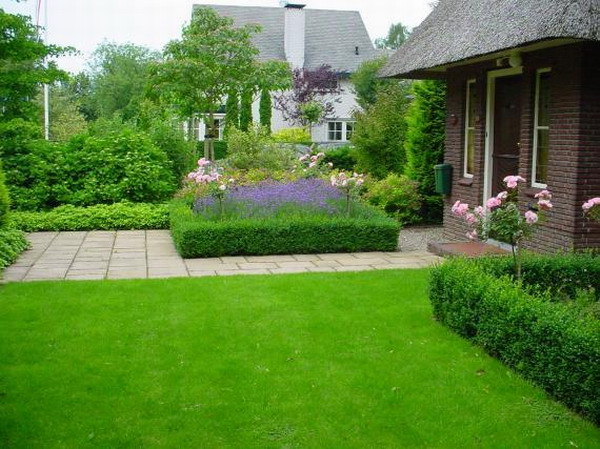
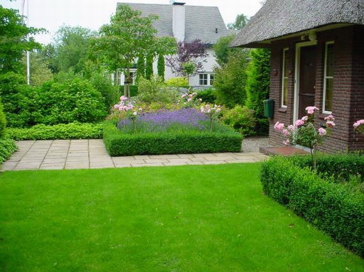

| Газон в Чернівцях |
|
Ділянка в саду, засіяна низько ростучими рослинами або злаковими називається газоном.
Газон є найважливішим елементом будь – якого саду. Його соковитий зелений килим служить фоном для квіткових композицій, дерев, чагарників, сприяючи виділенню їх форми і забарвлення. Він також робить структуру саду більш легкою, візуально розсуває межі, створює відчуття простору, зв’язує всі елементи саду в одне ціле. Гарний, свіжо – зелений газон – важливий елемент садової технології. Сам його колір милує погляд, а м’ягкий трав’яний килим приваблює до відпочинку. Трав’яний покрив, доглянутий і густий, сприяє покращенню мікрокліматичних умов. Газон позитивно впливає на здоров’я. В самий спекотний день температура повітря над газоном на 4 – 5 градусів нижча, а вологість – відсотків на 15 вища. Доглянутий і гарний газон – це не тільки естетично й елегантно, а й корисно для нервової системи. Зелений колір благополучно впливає на нервову систему людини.
Види газону:
Партерний газон
    Партерний газон – це газон вищої якості. В склад трав’яної суміші для партерних газонів, як правило, входять, низькорослі й вузьколисті злаки, що добре ростуть, створюючи густий та щільний трав’яний покрив, до того ж ще й проводиться низька стрижка. Травова суміш для партерного газону складається зі спеціально підібраних сортів половиці, вівсяниці, мятлика. Даний вид газону призначено виключно для декоративної функції – краси перед парадним входом.
При створенні партерного газону необхідно врахувати:
Спортивний газон.
  
Спортивний газон відрізняється від інших видів кращою стійкістю до витоптування, швидшої регенерації трав, створюючи щільну дернину за рахунок активного розвитку коріння (вівсяниця червона, мятлик луговий). Спортивні газони переносять інтенсивні і довгі загрузки при регулярному догляді за ним. Спортивні суміші рекомендується використовувати для створення, як професіональних спортивних трав’яних покривів так і будь – яких інших спортмайданчиків для заняття різними видами спорту.
Мавританський (квітучий) газон.
  
Мавританський газон являє собою суміш з 80 – 95% багаторічних злакових трав і 15 – 20% диких польових квітів – як однорічних, так і багаторічних. Квіти підібрані з різним періодом цвітіння, для того, щоб ваша ділянка виглядала постійно квітучою. Такі газони дуже популярні по двом причинам. По – перше, це чудова можливість створити природній баланс у вашому саду, а по – друге, газони практично не потребують догляду. Створювати мавританські газони рекомендується на берегах штучних водойм, на задніх планах ділянки і в місцях, не пристосованих для розвитку культурних рослин.
Догляд за газоном. Чернівці.
Правильний догляд – це стрижка, полив, знищення бур’янів, підживлення і т.д.. Результат догляду з’являється не відразу і складається з того, щоб допомогти траві стати сильнішою і тоді незваним гостям – бур’янам, моху, деяким болячкам буде тяжче на ньому з’являтися.
Обов'язкові види робіт: Регулярний покіс. Основним завданням при догляді за газоном є правильний покіс. Це означає вчасно його почати і закінчити. Секрет покосу полягає в тому, щоб трава була настільки висока, щоб коріння отримувало достатню кількість поживних речовин, і достатньо коротка, щоб газон виглядав гарно. Висота трави повинна залишатися приблизно однаковою протягом всього сезону. Газон потрібно косити часто, але не дуже коротко. Це запобігає збільшенню листової маси, зменшує розхід корисних речовин і зменшує кількість бур'яну, дощових черв'яків і грубих трав. Від частого покосу газон набуває карликової форми росту, що стимулює утворення щільність дернини. Коли косити Газон косять починаючи з квітня-травня до жовтня. Частота покосів залежить від типу газону, висіяних на ньому трав, погоди, характеру грунту, стану газону і порі року. Кращий порадник - висота трави. Якщо вона на 1,5 см перевищує рекомендовану - пора косити. Ось приблизні поради, якими можна користуватись: косіть два рази в тиждень в період активного росту трави влітку. Косіть раз в тиждень весною, восени і в засушливий час влітку. Якщо в період активного росту трав газон косити частіше, ніж один раз в тиждень, тоді це призведе до одноразової втрати великої кількості листової маси. Від цього трава стає слабшою, і на прогалинах з'являються мох та бур'ян. Регулярний полив. Під час посухи трав'яний покрив перш за все втрачає пружність і брякне. Ці ознаки проявляються приблизно за сім посушливих днів влітку або десять - весною. В такому випадку добряче полийте газон. Пам'ятайте, що від щоденного обприскування більше шкоди ніж користі. Коли поливати. Перша ознака браку води - втрата травою "пружності". Саме в цей час необхідно полити газон, інакше він втратить яскравість і набуде сіро-зеленого віддінку. Якщо цього не зробити, трава пожовтіє, потім втратить колір і на газоні з'явиться бур'ян. Перед поливом огляньте поверхню землі. Якщо на ній з'явилась кірка, краще спочатку її проколоти, щоб полегшити проникнення води. Поливати краще всього в прохолодну погоду, коли вода слабо випаровується. Кращий час для поливу - вечір або ранок. Але найкраще - влаштувати автоматичний полив, від роботи якого і насолоду отримуєш, і часу побільшає. Рівняння країв. Газон з травою, що відросла по краям виглядає некрасиво. Сплануйте газон таким чином, аби газонокосарка діставала до його країв. Після покосу підрівняйте краї за допомогою гострих садових ножиць. Прочісування газону. За рік на газоні скупчується багато сміття: опале листя, гілочки, суха трава, купки викинутої дощовими щерв'яками землі. Універсального інструменту для прибирання не існує - для кожного виду робіт презначені особливі пристосування. Опале листя прибирають віником або граблями з гумовими зубцями. Внесення добрив. Постійна стрижка трави сильно виснажує запаси корисних речовин в грунті. Тому кожен рік на початку сезону газон необхідно підживлювати, а саме весною чи на початку літа азотним, фосфорним та калійним добривом. Безглуздо вважати, що підживлювати траву не потрібно, тому що від цього вона буде швидше рости - від голодування трава стає слабшою і рідшає. Як підживлювати. Перед внесенням добрива взнайте прогноз погоди. Підживлювати краще перед дощем, але не варто цього робити під час тривалої посухи, у крайньому разі добряче полийте газон і тоді, як трава висохне можна підживлювати. Якщо після підживлення два дні немає дощу, ретельно полийте газон. Мульчування. Мульчування - це розподілення по поверхні газону рихлого органічного матеріалу. Суміш для мульчування зазвичай складається з плодючого мінерального грунту, піску та гумусу. Садівники здійснюють його кожен рік. Мета мульчування - заповнити утворені протягом сезону дрібні нерівності на поверхні грунту. Як здійсюють мульчування Краще всього поверхню газону мульчувати на початку осені, переважно - в середині вересня. Почистіть газон граблями, якшо на ньому є купки сухої трави. Якщо за день-два до мульчування проколоти дернину вилами, то його ефективність на щільному грунті значно збільшиться. Додайте по 1,5 кг суміші на 1 кв. метр газону і розрівняйте по поверхні грунту так, щоб трава не пом'ялась, але якщо суміш розкинута нерівномірно - це зменшить ефект мульчування. Аерація. Суть аерації дуже проста. В грунті робляться отвори, щоб у них могло проникнути повітря і вода. Однак зробити це не так і легко. Головна мета аерації - подолання щільного шару грунту на глибину 5-8 см. Найщильнішим грунт буває в місцях найбільшого навантаження: на дитячому майданчику, в центральній частині доріжки і т.д. Ущільнення глиняного грунту не дає змоги розвиватись кореневій системі трав, тому потрібно проколювати землю - робити аерацію. Грунт проколюють зубцями на глибину не менше 8 см. Тоді відбувається газообмін: необхідний для росту коріння кисень проникає вглиб, а шкідливий вуглекислий газ, затримуючий доступ води до кореневої системи, випаровується. Під час посухи корінці рослин гинуть від недостачі води, а восени в грунт не проникає волога, на газоні може з'явитися мох, а трава починає сохнути. Де проводити аерацію. Аерацію проводять на газоні у тих місцях, де з'явились дві або більше наступних ознак - застій води після дощу; - трава дуже швидко набуває бурого кольору в суху погоду; - росте повзучий мох; - в місцях де інтенсивно витоптується трава; - трава втрачає пружність. Коли здійснювати аерацію. Найкращий час для здійснення аерації - жовтень. Виберіть день, коли земля волога. Спочатку зробіть скарифікацію газону, після чого зробіть мульчування його поверхні. Це покращить "дренаж" грунту, а молоді корінці, що виросли покращать опір трави до посухи наступного літа. Робіть аерацію весною чи літом, перед внесенням добрива або поливом. Виберіть день, коли трава волога. Боротьба з бур'янами. Боротьбу з бур'янами необхідно здійснювати доки вони не розрослися. Це можна робити механічним або хімічним способом - вибір залежить від кількості та виду бур'яну. КК КАЛЕНДАР РОБІТ ПО ДОГЛЯДУ ЗА ГАЗОНОМ Січень У цьому місяці на дорослому газоні роботи небагато, за виключенням збору лися, що опало. Ви нічим не допоможите траві в сиру та морозну погоду, а ось нашкодити ходінням по насиченому водою або промерзлій землі можете дуже легко. Це найкращий час, щоб перебрати газонокосарку і підготувати інший газонний інвентар до весни. Лютий В теплих районах сезон догляду за газоном може початись вже у цьому місяці, з появою землі, що викинули дощові черв'яки. Коли ці купки підсохнуть, приберіть їх мітлою. Не косіть газон до початку березня. Березень По великому рахунку саме у цьому місяці починають основні роботи на газоні. Як тільки трава почне рости і дозволяє погода і стан грунту, граблями почистіть газон від листя та сміття. Не перестарайтеся - на цьому етапі легко пошкодити траву. Якщо взимку були сильні морози, є сенс утрамбувати дернину садовим катком. Під час першого покосу скосіть лише самі кінчики трави: низький покіс у цей час може призвести до сильного пожовтіння. Виберіть день, коли на газоні сухо - в цьому місяці достатньо двох покосів. Покіс - не єдина робота на газоні у травні: слідкуйте чи не з'явились ознаки захворювань, при необхідності проведіть обробку проти моху і підрівняйте краї. Квітень Якщо трава і бур'яни ростуть досить швидко, то в кінці місяця можна приступити до підживлення і боротьби з бур'янами. Косіть часто, щоб трава не дуже відростала, але не коротше 4-5 см, в залежності від типу газону. Викопайте купки грубої трави, засипте утворені ями посівною сумішшю і засійте або застеліть дерниною. Перевірте дернину, що виклали, при необхідності засипте щілини між ними. Травень Продовжуйте покоси, зменшуючи висоту ножів, щоб вийти на літню висоту трави. В травні газон косять раз в тиждень. У більшості районів - це кращий час для використання гербіциду у боротьбі проти бур'янів. Пам'ятайте, що обприскувати гербіцидом можна по сухій траві, при вологому грунті і в сонячну і тиху погоду. При наявності на газоні мятлика однорічного або конюшини перед покосом розчешіть траву мітлою чи граблями. В травні грунт зазвичай буває вологий, але, якщо він сухий, добре полийте газон. Червень Переходимо на літній графік покосу. Якщо грунт вологий, косити потрібно два рази в тиждень. Якщо на дворі суха погода, збільшіть висоту покосу і не збирайте скошену трау. Червень - час літнього підживлення і обробки проти бур'яну. Якщо газон блідий, додайте швидкодіюче азотне добриво (наприклад сульфат амонію) або фірмове рідке добриво. Вибірково обприскуйте гербіцидом бур'яни, що вціліли після попереднього обприскування. Якщо на газоні є конюшина, перед покосом необхідно розчесати траву граблями. Регулярно рівняйте траву по краю газону, не забувайте про полив у суху погоду. Липень Регулярно по-літньому низько косіть газон, періодично, як і в червні, розчесуйте його граблями. Якщо раптом виникла проблема з конюшиною, мшанкою, тисячорічником, застосуйте хороший гербіцид вибіркової дії. Здійснювати таке обприскування в червні уже трохи пізно, але залишати ці бур'яни на газоні ні в якому разі неможна. Серпень Догляд такий же, як і в липні. Серпень - крайній термін для застосування гербіциду і внесення азотного добрива. В кінці серпня можна почати сіяти траву. Вересень У цьому місяці починається перехід до осінньої програми догляду - косити треба рідше і не так низько, приблизно на 5 мм довше, ніж літом. Можуть активізуватись дощові черв'яки, змітайте купки землі мітлою, а наступного року весною підкисліть грунт. Якщо трава бліда і рідка, додайте підживлення. В середині або в кінці місяця, коли часто йдуть дощі, займіться ремонтом газону. Від горбичків, ям, нерівних країв і прогалин можна позбутися. В вересні на будь-якому газоні рекомендуємо спочатку провести скарифікацію. Якщо на газоні з'явились ділянки хворої трави, обробіть їх системним фунгіцидом карбендазимом. Прослідкуйте за кротами. Жовтень В жовтні закінчуються регулярні покоси. Підніміть леза газонокосарки вище. Підрівняйте траву по краях газону. Підживлюйте газон осіннім добривом, відремонтуйте його і закінчіть скарифікацію, якщо ви не зробили цього в минулому місяці. Приберіть опале листя. Викопайте шматки грубої трави, утворені пустоти засійте або застеліть дерниною. Якщо на газоні є мох, в цей час потрібно застосувати дихлорофен, а не гербіцид. Посів трави на молодому газоні вже повинен був бути заверншеним, але ідеальний час для укладання дернини лише починається. Листопад Якщо погода не морозна і не дощова, а поверхня газону не розкисла, один раз покосіть газон, встановив леза газонокосарки повище. Пора почистити і змазати косарку та інше садове обладнання перед зимою. Продовжуйте змітати землю від дощових черв'яків та листя, що залишилось. Сіяти траву в листопаді уже пізно, але для укладання дернини - це хороший час. Грудень Якщо не враховувати збору листя, грудень - спокійне завершення року. Не ходіть по замерзлому чи мокрому газону. В хорощу погоду можна укласти дернину. |